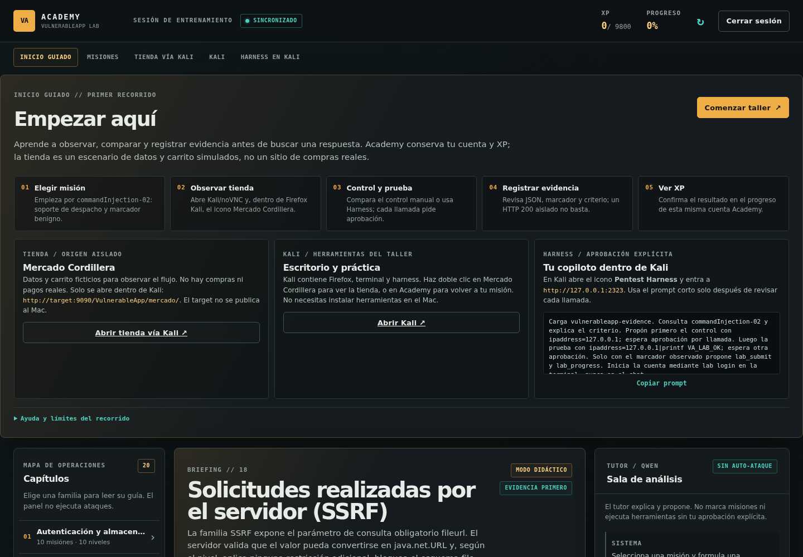

01 / OBSERVAR↗
01
Primero el
control.
Una respuesta HTTP 200 no es una vulnerabilidad. Cada misión comienza por reconocer entrada, componente y comportamiento esperado.
CONTROL → CONTEXTOLABORATORIO LOCAL / ES
Una Academy en español y Mercado Cordillera, una tienda chilena ficticia sobre OWASP VulnerableApp: elige misión, abre Kali, compara controles y registra evidencia real.
Sin target público · sin chat remoto · sin telemetría

La puntuación no la decide el modelo.
La valida Academy.
EL ENFOQUE
El laboratorio está hecho para que el razonamiento quede visible: qué controlaste, qué cambiaste, qué observaste y qué evidencia permite afirmarlo.
Una respuesta HTTP 200 no es una vulnerabilidad. Cada misión comienza por reconocer entrada, componente y comportamiento esperado.
CONTROL → CONTEXTOManual o asistido, el ejercicio conserva el contraste: la prueba solo tiene sentido frente a su control y su resultado observable.
CAMBIO → SEÑALEl runner de Kali entrega la evidencia; el servidor calcula el progreso individual. Repetir un intento no duplica recompensas.
PRUEBA → PROGRESOTODO LOCAL
El laboratorio completo permanece dentro de Docker. El target conserva el Java original de SasanLabs/VulnerableApp; el portal, Kali XFCE/noVNC, el runner y Ollama se conectan por redes internas. Desde el anfitrión se publica únicamente el gateway local en 127.0.0.1:8080.
Perfil de referencia: Mac con M3 Max y 128 GB. La inferencia se comunica como backend de CPU: no se promete Metal ni GPU.
Contexto y atribución: proyecto estudiantil independiente, en contexto docente de Tomás Vera. El proyecto relacionado está listado por OWASP; no implica sello, logo, patrocinio ni certificación.
huihui_ai/Qwen3.8-abliterated:27bHARNESS FIJADO 4638f38082bdf37cea03ad151905c4bb8662f6e9
DOS RUTAS, UNA EVIDENCIA
El harness no reemplaza tu análisis ni abre una shell libre. Encapsula operaciones permitidas, muestra argumentos y pide una aprobación nueva para cada llamada.
Desde la terminal de Kali, reconoce el control, cambia un parámetro y compara el cuerpo de la respuesta. La guía explica qué observar, no solo qué copiar.
$ curl -sS --noproxy '*' --get \
--data-urlencode 'id=999' \
http://target:9090/VulnerableApp/BlindSQLInjectionVulnerability/LEVEL_1Ejemplo documentado de control. Ejecutar solo dentro del laboratorio local.
El preset Taller VulnerableApp limita el modelo a descubrir, hacer HTTP, registrar evidencia y cargar skills. Tú revisas cada operación y decides si se ejecuta.
$ lab login
$ lab missions
$ lab statusLa cuenta del CLI es la misma del portal; el modelo no controla la puntuación.
TOUR DE PRODUCTO
Galería estática del proyecto. Las vistas nuevas de Academy y Mercado Cordillera se incorporan como capturas locales; GitHub Pages no ejecuta el laboratorio. Haz clic en cualquier vista para ampliarla.
MAPA DEL RECORRIDO
La landing explica el sistema; la práctica real ocurre en tu instancia local. Cada pantalla tiene un origen y una responsabilidad distintos.
En localhost:8080 creas tu cuenta, lees el briefing y con Comenzar taller abres commandInjection-02 como soporte diagnóstico. También puedes usar #mission=commandInjection-02; el portal no comparte origen con el target.
Desde Academy, Abrir tienda vía Kali lleva al noVNC del gateway; el icono de Firefox en Kali abre target:9090/VulnerableApp/mercado/. No hay puerto host 8081, pagos ni comercio real.
En Kali, academy:8000 vincula la cuenta y el icono abre 127.0.0.1:2323 dentro del escritorio; no hay enlace host 2323. Cada llamada del harness exige una aprobación nueva.
EMPEZAR EN LOCAL
Descarga el repositorio completo. No necesitas instalar Kali, Java, Python, Ollama, Node ni VNC en el anfitrión: Compose prepara el entorno dentro del lab. Solo se publica el gateway en 127.0.0.1:8080; Academy abre el noVNC y, dentro de Kali, Firefox llega a la tienda por target:9090/VulnerableApp/mercado/.
Solo para prácticas autorizadas. Mantén el gateway en localhost. No publiques el target, no uses túneles y trabaja con datos ficticios.
Abre una terminal en una carpeta de trabajo.
git clone https://github.com/vtomasv/vulnerableapp-academy-public.gitEntra primero en vulnerableapp-academy-public. El primer arranque descarga imágenes, paquetes y el modelo de 27B; asigna suficiente RAM a la VM Docker.
cd vulnerableapp-academy-publicdocker compose up --build -dRegistra tu cuenta, pulsa «Comenzar taller» y después «Abrir tienda vía Kali».
http://localhost:8080En Kali: inicia sesión con la misma cuenta de Academy, elige commandInjection-02, lista misiones y observa tu estado.
lab login && lab missions && lab statusLÍMITES CLAROS
Esta web explica cómo funciona el proyecto. No ofrece un target alojado, no abre un chat de Ollama en Internet y no sustituye la ejecución de Docker en tu equipo.
PREGUNTAS DE CAMPO
En tu equipo, dentro de Docker Compose. El perfil descrito aquí es un Mac M3 Max con 128 GB; la ejecución del lab y la inferencia se mantienen en el backend de CPU. Consulta la validación antes de una clase.
target:9090 y academy:8000 son nombres internos de la red de Kali. En el anfitrión solo usa Academy en localhost:8080; no se publica target, tienda, VNC, harness ni Ollama en otros puertos. La tienda se abre mediante noVNC y el icono de Firefox dentro de Kali; la página pública no aloja ninguno de esos servicios.
No. El preset Taller VulnerableApp restringe las operaciones a lab_discover, lab_missions, lab_http, lab_submit, lab_progress y skill; cada llamada pide aprobación y una guarda adicional limita herramientas y argumentos.
La evidencia sale del runner de Kali y Academy valida el objetivo. El modelo no concede puntos, y una repetición no debe duplicar la recompensa.
Es la interfaz técnica heredada del upstream y se conserva como referencia opcional en /VulnerableApp/original/, incluida su captura legacy y su selector en inglés. No es un error ni una aplicación moderna faltante: la personalización del launcher no reemplaza el motor original, que permanece intacto. Las guías nuevas están en español, pero no se promete traducir todos los textos técnicos originales.
Empieza por la guía paso a paso, sigue con el tutorial completo y revisa la guía del harness cuando quieras comparar el recorrido manual con el asistido.
Vista real de la ejecución local.